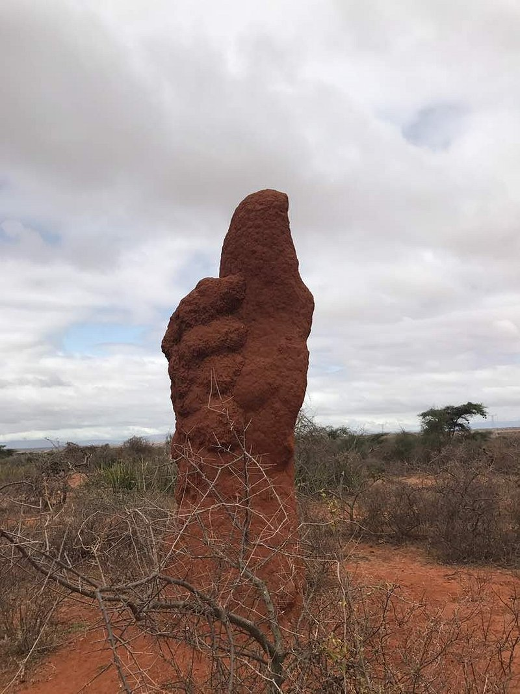
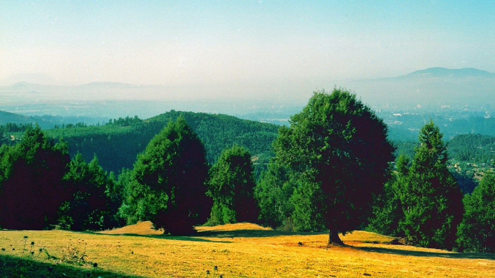
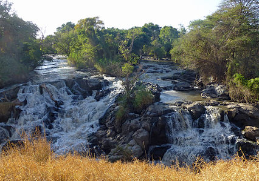
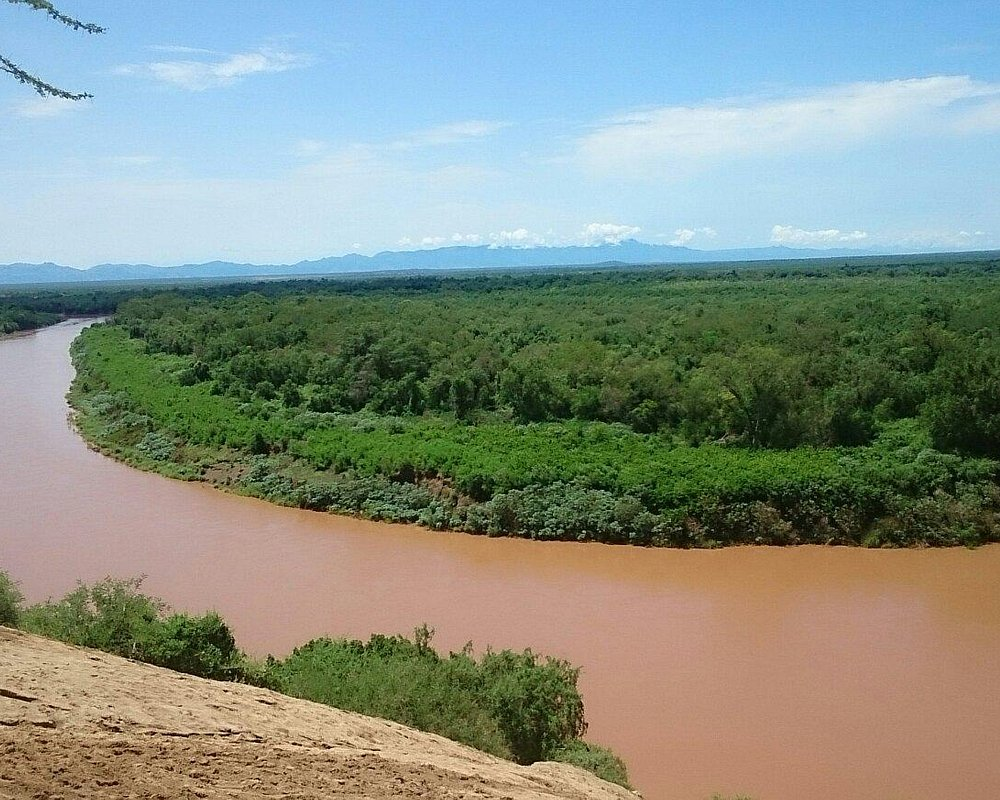
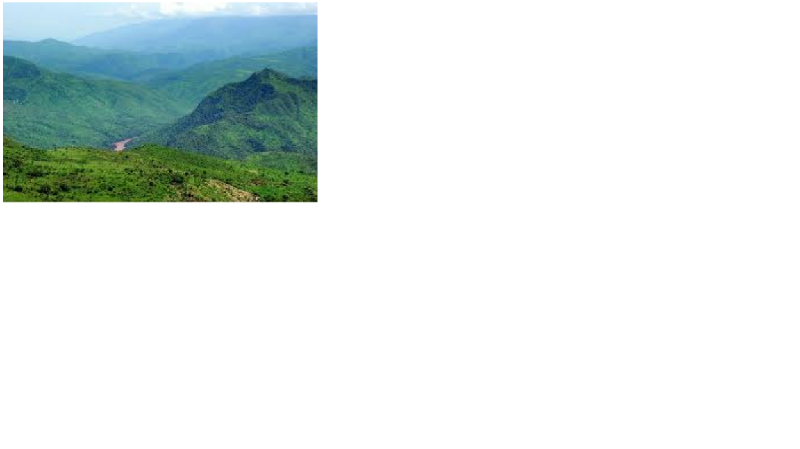
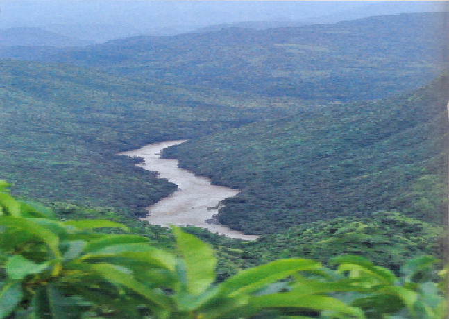
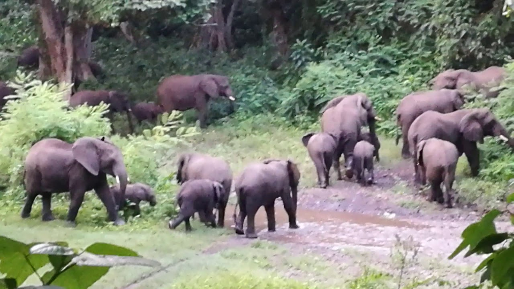
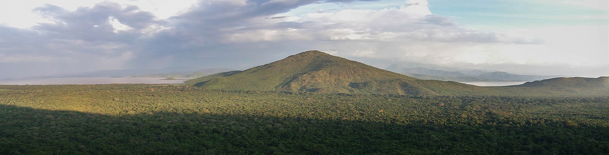

Land sites
Land sites are tourism sites that are concentrated and contained in land like parks and sanctuaries. Ethiopia in this regard has a lot of land sites that provide interesting sites to visit.
Land sites are tourism sites that are concentrated and contained in land like parks and sanctuaries. Ethiopia in this regard has a lot of land sites that provide interesting sites to visit.
Simien Mountains National Park, in northern Ethiopia is a spectacular landscape, where massive erosion over millions of years has created jagged mountain peaks, deep valleys and sharp precipices dropping some 1,500 m. The park is of global significance for biodiversity conservation because it is home to globally threatened species, including the iconic Walia ibex, a wild mountain goat found nowhere else in the world, the Gelada baboon and the Ethiopian wolf.

Mago National Park is one of the National Parks of Ethiopia. Located in the Southern Nations, Nationalities, and Peoples' Region about 782 kilometers south of Addis Ababa and north of a large 90° bend in the Omo River, the 2162 square kilometers of this park are divided by the Mago River, a tributary of the Omo, into two parts. To the west is the Tama Wildlife Reserve, with the Tama river defining the boundary between the two. To the south is the Murle Controlled Hunting Area, distinguished by Lake Dipa which stretches along the left side of the lower Omo. The park office is 115 kilometers north of Omorate and 26 kilometers southwest of Jinka. All roads to and from the park are unpaved.The major environments in and around the Park are the rivers and riverine forest, the wetlands along the lower Mago and around Lake Dipa, the various grasslands on the more level areas, and scrub on the sides of the hills. Open grassland comprises about 9% of the park's area. The largest trees are found.
Entoto Natural Park is the unique place to discover the vastest primaeval mountain area with streams flowing out from clear springs and waterfall where it amazes with absolutely stunningly dramatic places for relaxation or completely hilarious water activities in diverse meandering streams which continues to naturally create hidden rock vaults.
Awash National Park occupies a total area of 291 square miles in the Great Rift Valley’s northern region. The park was established in 1966 after advice from UNESCO. The parks landscapes include the Awash River, Mt. Fantale dormant volcano, hot springs, waterfalls, and plains. The park is mostly arid, and it is characterized by grassland and woodland. Vegetation is composed of acacia, scrubs, riverine forests, and pockets of Doum Palm. Annual precipitation in the park is recorded between 400 and 700 mm. The park boasts populations of baboons, warthogs, hippopotamus, greater kudus, East African oryx, crocodiles, Defassa waterbuck, lions, and leopards. The park is managed by the Ethiopian Wildlife Conservation Authority. Threats facing the pack include cattle grazing, deforestation, agricultural expansion, and pollution of the Awash River.
ONP is one of the largest and biologically rich National Parks in Africa which is found in SNNPRS of Ethiopia & located about 870 and 655km southwest of Addis Ababa and Hawassa, respectively.The Park is fortunate in possessing a number of rivers and streams which ultimately drains to Omo River. The name of the park derived the famous river that passes following the eastern boundary of the park called Omo River.In this park 325 species of birds and 75 species of mammals have been recorded. Eland, cheetah, elephant,giraffe, buffalo, lion, leopard, lelwel hartebeest, tiang, Oryx, Burchell's zebra, Lesser kudu, de Brazzas monkey, common baboon and gureza, ostrich on the plains and the endemic black-winged love bird are among others typical features of ONP.
Gambela National Park was founded in 1973 in western Ethiopia. The park is situated in the river systems of the Akobo, Gilo, and Baro Rivers. The park’s habitats include the forest, rivers, swamp marshes, wetlands, savanna, and grassland. Most of the park is low and flat with an average altitude of 500 meters above sea level. There are some higher rocky regions in the park as well. Mean yearly precipitation is at 1,400 mm and a mean temperature of 27 degrees Celsius. Notable fauna in the region includes monkey, baboons, leopard, giraffe, buffalo, elephant, bushbuck, waterbuck, and abundant avifauna. The park has little infrastructure, and most of it is unaltered.
Gibe Sheleko National Park is one of the conservation area located 178 km.from A.A. & 433 km South west of Hawassa. It is found in Gurage zone Abeshege,Cheha, Enemore and Ener woredas. It is etablished in 2001 E.C. and covers an area of 360 sq.km.
The topography of Gibe Sheleko National park is mainly characterized by heterogeneous & hill terrain in which its larger proportion is hilly undulating interspersed with different valley floor. Besides, some flat lands & undulating to rolling plains with incised river & perennial streams, valley & gorges occur in the area. In the park there are different spectacular hot springs. The area has rich and intact vegetation cover. The area coveres grasslands with scattered trees, woodland, mountain & reverine forest.The park is also inhabited by an extraordinary composition of fauna. Recent records show that about 16 species of larger mammals inhabit the park .The mammals include: Lesser kudu,Warthog, Common bushbuck, Lion, Leopard, and Black & White colobus & others.The Gibe River that flows across the park hosts various species of fishes, Water fowls, Hippopotamus & Crocodile.
Chebera Churchura National Park is a national park located in South West Ethiopia Peoples' Region in the southwest of Ethiopia. The park was founded by the regional government in 2005. The park is located 133 km south from Jimma and 483 km southwest from Addis AbabaThe park covers 1,250 km2 and contains four types of habitat. Most of the park which is covered by 62% is wooded grassland dominated by elephant grass (Pennisetum purpureum), with montane woodland comprising 29% along with woodland and riparian forest the rest. Palm trees are significantly diverse within the park's ecoregion.The park is home to 37 species of large mammals and 237 species of birds. The park protects the herds of African Elephants that are abundantly rare within the protected forest areas and open grasslands. Mammals that are also found in Chebera Churchura national park include Lions, Leopards, Servals, Greater kudus, colobus monkeys, Vervet monkeys, hippos, Defassa waterbucks, warthogs, and Cape buffalos.
Nechisar National Park (or Nech Sar National Park) is a national park in the Southern Nations, Nationalities, and Peoples' Region (SNNPR) of Ethiopia. It is in the Great Rift Valley, within the southwestern Ethiopian Highlands.
The 750-square-kilometre (190,000-acre) park includes the "Bridge of God", an isthmus between Lake Abaya and Lake Chamo, and the Nechisar (English: white grass) plains east of the lakes. It is east of Arba Minch. Park elevations range between 1,108 and 1,650 metres (3,635 and 5,413 ft) above sea level. Nechisar National Park was established in 1974. Under the management of African Parks Network (APN since 2005, it was reportedly scheduled to hand over management to the Ethiopian government in June 2008
Wildlife in the park include plains zebra, Grant's gazelle, dik-dik, Hippopotamus, African leopard, Spotted hyena, and greater kudu as well as one of the last three populations of the endangered Swayne's hartebeest, Lion, and Cheetah. A stretch of the northwest shore of Lake Chamo is known as Crocodile Market, where hundreds of Nile crocodiles gather to bask. The park also hosts bushbuck, waterbuck, bushpig, Anubis baboon, vervet monkeys, and black-backed jackal. The endangered African wild dog Lycaon pictus, once existed in the park, but may now be extirpated due to human population pressures in this region. In 2009, a small group of less than 23 lions were estimated in and around the protected area. Nechisar National Park is considered an important habitat for birds including kingfishers, storks, pelicans, flamingos and African fish eagles
some clips on ethiopian national parks
some clips on ethiopian sanctuaries